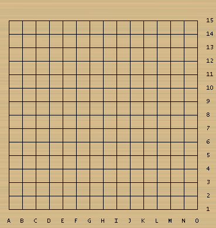

2013年全国五子棋团体锦标赛自战棋评
#1 2013年全国五子棋团体锦标赛自战棋评作者：屏蔽 发表时间：2013-5-2 1:05:59
原文载于我的百度空间【复平面】
http://hi.baidu.com/arbil1989/item/8df986f841b7adcf531c269c
===============
最近工作暂时不太忙，★棋心愉悦★社团也较早联系了我，于是决定代表社团出战本次全团赛。应该说三、四月份的时候一直在网上下棋，虽然一年多没有打过打比赛，但状态还不至于太生疏。赛前也积累了一些流行变化，并进一步恢复了计算力，准备可以算是比较充分吧。四月底，经过一番波折，最终确定本队成员为：一台祁观、二台兰志仁、三台李一。从结果来看，棋心愉悦能够以全胜的辉煌战绩勇夺冠军，是三个人共同的努力，而我能够偏安三台以全胜取得最佳台次，也离不开祁观在计算和思路方面的指导，以及兰志仁对于比赛策略和心态方面的调整。最后，我还要再次感谢主办方为我们提供这样一个良好的交流机会、感谢★棋心愉悦★社团在赛事中对队伍及选手的大力支持。
4月28日到场之后，我和祁观、周可鼎、黄金贤等人在闲暇时进行了手谈，出乎意料的是我赢下了所有的对局，应该说对我的状态是一个很好的肯定。第一天的晚上休息的不错，第一轮比赛对上海2队，是一次非常良好的热身，对何耀文一战充分调动了自身的比赛状态，最后在剩余不到五分钟时取胜，但其实是在我的预料和掌控之中的，可以说过程和结果都令人十分满意。第二轮小遇挑战亦顺利过关。第三轮我们对上了同属★棋心愉悦★社团的队伍，轻松取胜，看似是得到了很好的休息，但也注定了次日疯狂的赛程，绝不是看上去那样的走运。果不其然，第二天首战炫飞2队，对方开局对我们是一个巨大的优势，但与仇云飞的对局却是本次比赛我的七连胜中最为凶险的一盘，直到最后一分钟我才在盘端巧妙回旋取胜，最终兰志仁成功在曹冬的较弱变化中找出取胜线路，殷立成也遗憾超时负于祁观，正是这一轮的三比零横扫胜利大大增强了我个人和整个团队的自信心！第五轮对阵河北妙手，状态全开的我成功突破瑞星和棋大定式，利用黄圣明的一点点不稳定抓住机会取胜，兰志仁则凭借强运捡漏取胜周可鼎再次确立团队的胜利！第六轮我如法炮制，以相似的思路在瑞星和棋大定式战胜李洪斌老师，但这一轮却是我们队伍最为艰难的一轮，不过祁观、兰志仁发挥非常出色，稳稳守住前两台没有丢分，队伍也以一胜两和再拿一分！晚间经过紧张的小分计算，我们队伍确认提前夺冠，我也提前获得了最佳三台的殊荣。最终日最后一轮，卸去所有压力的我携一身浩然正气走出了令自己满意的进攻，在斜月局中执黑强杀冯小峰，最终队伍和个人都以七连胜完美收官。
最后谈谈我这次比赛过后的一些简单感悟：一是棋下的越多越觉得自己有许多不足和欠缺之处，尤其是计算力的提升似乎永无止境，看来今后绝不缺少提升和努力的方向。二是结合比赛对局对“空间”这一概念有了更为深刻的理解，进攻时如何拓展和利用空间，防守时如何限制和压迫空间，逐渐成为我的行棋理论体系中重要的一个部分。三是进一步认识到微小的问题有可能酿成惨重的结果，而如何判断和把握这微小的问题，则是从中手向高手进阶的必经之路。以上三点分享出来，与大家共勉。
2013年全国五子棋团体锦标赛第一轮，2013年4月29日，中国秦皇岛
瑞星局（交换），5A=I7，何耀文（黑）负李一（白）
寻找状态的一局：至白24都是预定走法，25到36的交换也容易看清，但是37-48干净的一手处理黑棋没有走？“遗忘”或许将成为了微妙的突破口。37略显怪异的选点，此时前两台局势不明，我也有一定争胜的压力，甚至一度想直接38-48，所幸冷静了一下，看出左边暗含联络材料的VCT。38手实在是憋屈的防守，但也确实十分有力。黑39问题手！看到这手后我意识到何耀文的实力很可能已经hold不住这个局面了，而这也是为我打开了取胜的前景。果然白40取一手外势，几步交换之后，黑47“遗忘”了白48的关键点在上方脱先！白48抢攻后，黑51被迫回防，白52迷惑黑棋！黑53的简单败确实幸运，但也在我的意料之中。
2013年全国五子棋团体锦标赛第二轮，2013年4月29日，中国秦皇岛
疏星局（不换），5A=G9，汪永佳（黑）负李一（白）
赛前了解到对手似乎对自己熟悉的变化有所准备，行棋节奏也较快，似乎显示出了一定的自信。那么我该如何选择策略呢？疏星开局后留下二打，我考虑了一下，选择了这个稍弱的白6和必败的白8！此必胜变化对于大部分专业棋手尚属艰深复杂，进攻选点甚多，即使对定式略通一二也很容易弄混局面。虽然不是轻敌，但我依然隐约感到对手并无足够的“力量”在如此大型的局面中以命相搏！果然黑19失误！长考后J12、J13的防御我都没有找到必胜线路，但实战的白20还是更加容易看清的防守，但对手似乎在此处出现误算？至白28，黑棋的进攻受制于长连和反四，恰好无法成立！白32后我长舒一口气，但对手也并没有简单缴械，左边交换完毕后黑41定型，白42是关键的一手进攻选点！实战42-42有四重想法：一是要45位的好点，二是要46位的好点，三是限制黑7-黑1隐含的线路，四是若43-44，44-43，45-I7，46-I5/J4后白棋依然能够在下方获得不错的连接手段。不过黑棋43、45连贯的防守思路真是可圈可点。实战46我再次陷入思考，其实这里46-I3是局部必胜，我虽然思考过此点，但47-J4后白棋的玄妙一胜实在不是我的计算能力所能及，又担心这样防守后白棋进攻形状支离破碎，最终只好放弃而走了普通的白46，此处47-55是当然的强防，此时前两台的情况大概也能取胜，我也做好了右下局部骗杀之后和棋的准备，但实战黑棋47大失误！以下白棋简单取胜实在不难。
2013年全国五子棋团体锦标赛第三轮，2013年4月29日，中国秦皇岛
斜月局（不换），5A=J9，李一（黑）胜张英劼（白）
简明的一局，对手定式不熟而脆败。
2013年全国五子棋团体锦标赛第四轮，2013年4月30日，中国秦皇岛
最为凶险的一轮！14-J6本来不错，我却因为杞人忧天式地担忧一个激烈的对攻变化而放弃，转而选择刚刚看到的一路白14变化，黑17后我才如梦初醒，顿时鸭梨山大。白18恢复冷静，挡活二做活二乃是宇宙真理不得不服，黑19单控右上空间？看来白棋已经被逼上绝路了，下半盘大好河山落入夷手！20-23以及一系列类似的变化在实战中都被排除，于是白20-20自然手段，22-31亦有23-H12强防而无法成立，无奈22再飘一手，黑23也自然。实战24是巨大时间压力下最后的试应手，黑25！D9位又出现了黑棋强大的进攻手段，此时仅剩不到三分钟的我孤注一掷，迅速排除了几个没什么前途的进攻选点，走出了白26联络所有材料的强行进攻！其实这里我也只是算清了27-28不成立，同时也看到了27-H12的最强防。实战27-27？白30跳三后白棋成功拓展出全新线路取胜！振奋人心的一局！其实27-H12后，我也准备好28-27继续进行强骗，但复盘拆解时才发现这个变化也是白必胜的，也就是说这个白26本身就是一套精妙的VCT必胜手段！这个结论令我为之一振，实战攻防选点的良好状态得到了完美的印证！这盘过后，我感到我整个人都隐隐散发出金色圣光，状态绝佳！这盘棋虽然不长，但其中的计算量却是整个七盘棋过程中最大的，很多内容无法在棋评中一一叙述，各位朋友如有兴趣也可继续自行拆解、分析。
2013年全国五子棋团体锦标赛第五轮，2013年4月30日，中国秦皇岛
和棋大定式取胜之一。二台周可鼎考兰志仁必胜变化，走到白32定型后兰志仁依然正确必胜，我果断提和，黄圣明没有同意，走到黑57防守后兰志仁攻崩了，黄圣明果断提和，我也没有同意。这时我开始认真思考黑棋在左下没有交换，在左上局部的处理方法似乎亏欠了些，白棋上方的威胁可不是闹着玩的，于是白58尝试性的进攻。黑59后我考查60-61，61-J13，62-J12，63-60，64-H11后黑棋似乎隐约在上方存在VCF，其实这里白棋可以简单取胜，但这次误算却反而令我打开了新的思路，我意识到60位关键点之后，直接60-60临场地毯！漂亮的VCT！
2013年全国五子棋团体锦标赛第六轮，2013年4月30日，中国秦皇岛
瑞星局（交换），5A=I7，李洪斌（黑）负李一（白）
和棋大定式取胜之二。黑棋在下方完全没有进行必要的处理，黑49后直接提和。我吸取了上一轮的经验，认真分析局面后在50位直接便宜了一手，白52连贯的手段，瞄准斜线上的长连和53位的“四四”禁手，黑棋在此处陷入了被动。但另一个微妙的错误是，既然黑棋在上方采取了分断式的防守，就应该从防守效率的角度尽量放开白棋在右上孤单局部的优势，也即实行58-56-55的手顺，而实战中55后让白棋先做56的交换，则是让白棋在上方争取到的一个先手成功换回了左下、右下两部分足以取胜的优势。黑棋在左下后手处理干净之后，白62一手在实战中足以让任何对手崩溃，已经是不可能的防守任务了。
2013年全国五子棋团体锦标赛第七轮，2013年5月1日，中国秦皇岛
斜月二打定式，我喜爱的黑17走法，至20都是正常手段，黑21也是之前就准备过自认不错的应对。此时白棋交换几手后30手陷入完全的防守，此处很难说白棋有没有更好的防御手段。黑31是比较自然的进攻手法，当时我判断左下、右下、右上都有不错的空间和材料积累，联系全盘取胜应该是很好的思路，但实战32-32大强防！左右的联络线路忽然变得很狭窄，我只好开始考虑左下治孤的手段，可惜36位的进攻受制于白棋干扰过多，无论如何都不行。而在一筹莫展之时，就急需要一次思路上的调整——实战黑33！斜线上的联络与36位相比恰好移动了一格，柳暗花明又一村！黑35连贯，卖个破绽逼迫白棋单控在强点36位。此处考查37-44，38-B5，39-37，40-41大强防！于是实战中黑37-37顺势单挖，白棋毫无材料和反击，黑棋则在局部形成三个活二，而此局面白棋的唯一防又位于完全不合棋理的B5位，于实战而言实在是令白棋绝望的状况。最终白38后，黑棋一套干净利落的VCT简明取胜！
［ 暮雨迟 于 2013-5-2 6:33:07 时花20金币送鲜花一朵］
［ 淡月疏星 于 2013-5-2 7:43:41 时花20金币送鲜花一朵］
［ 淡月疏星 于 2013-5-2 7:43:41 时花20金币送鲜花一朵］
［ 淡月疏星 于 2013-5-2 7:43:41 时花20金币送鲜花一朵］
［ 淡月疏星 于 2013-5-2 7:43:41 时花20金币送鲜花一朵］
［ 淡月疏星 于 2013-5-2 7:43:41 时花20金币送鲜花一朵］
［ 淡月疏星 于 2013-5-2 7:44:03 时奖励此帖[金币加 100 威望加1］
［ 小红眼镜 于 2013-5-2 7:52:59 时花20金币送鲜花一朵］
［ 梧桐风 于 2013-5-2 9:57:30 时花20金币送鲜花一朵］
［ 梧桐风 于 2013-5-2 9:57:30 时花20金币送鲜花一朵］
［ 梧桐风 于 2013-5-2 9:57:30 时花20金币送鲜花一朵］
［ 华夏小宝 于 2013-5-2 13:38:49 时花20金币送鲜花一朵］
［ 华夏小宝 于 2013-5-2 13:38:49 时花20金币送鲜花一朵］
［ 华夏小宝 于 2013-5-2 13:38:49 时花20金币送鲜花一朵］
［ 华夏小宝 于 2013-5-2 13:38:49 时花20金币送鲜花一朵］
［ 华夏小宝 于 2013-5-2 13:38:49 时花20金币送鲜花一朵］
［ 华夏小宝 于 2013-5-2 13:38:49 时花20金币送鲜花一朵］
［ 华夏小宝 于 2013-5-2 13:38:49 时花20金币送鲜花一朵］
［ 华夏小宝 于 2013-5-2 13:38:49 时花20金币送鲜花一朵］
［ 华夏小宝 于 2013-5-2 13:38:49 时花20金币送鲜花一朵］
［ 华夏小宝 于 2013-5-2 13:38:49 时花20金币送鲜花一朵］
［ dyccj 于 2013-5-4 22:12:02 时花20金币送鲜花一朵］
［ 何柔 于 2013-5-5 8:29:39 时花20金币送鲜花一朵］
［ 何柔 于 2013-5-5 8:29:39 时花20金币送鲜花一朵］
［ 何柔 于 2013-5-5 8:29:39 时花20金币送鲜花一朵］
#2 Re:2013年全国五子棋团体锦标赛自战棋评作者：欧艾沃 发表时间：2013-5-2 3:01:23
对我看起来对手们下了比较不好，怎么可以现在赢两盘在那么100%和棋的瑞星的变种，我真的不可以明白。对手在那2盘也不弱的，时间也应该够得。奇怪，太奇怪啊！#3 Re:2013年全国五子棋团体锦标赛自战棋评作者：釣鱼岛岛主 发表时间：2013-5-2 12:35:51
道长携浩然正气，行棋如脱缰的野驴一般横扫所有对手拿到最佳三台，可喜可贺。#4 Re:2013年全国五子棋团体锦标赛自战棋评作者：恺恺 发表时间：2013-5-2 12:42:16
路过#5 Re:2013年全国五子棋团体锦标赛自战棋评作者：华夏小宝 发表时间：2013-5-2 13:03:52
第一轮已阅，表示前24手是爱网定式走法
#6 Re:华夏小宝【==Re:2013年全国五子棋团体锦标赛自战棋评==】作者：华夏小宝 发表时间：2013-5-2 13:35:10
第一轮 动态棋谱

前36手 感觉还挺不错的啊
#7 Re:2013年全国五子棋团体锦标赛自战棋评作者：华夏小宝 发表时间：2013-5-2 14:44:39
第二轮已阅 爱网定式走法的一个分支如下：
这个定式是对的么？
#8 Re:2013年全国五子棋团体锦标赛自战棋评作者：屏蔽 发表时间：2013-5-2 15:02:03
应该是对的。#9 Re:2013年全国五子棋团体锦标赛自战棋评作者：小帮帮 发表时间：2013-5-2 18:02:18
道长和邱云飞那一局，19之前蛮多人走的，实际上是必败的，现场现算的话，计算量确实很大！#10 Re:2013年全国五子棋团体锦标赛自战棋评作者：小帮帮 发表时间：2013-5-2 18:08:00
7楼分支正确，不过6楼的动态棋谱怎么做到的，教教小帮帮可以吗？谢谢！QQ：612222205#11 Re:2013年全国五子棋团体锦标赛自战棋评作者：小帮帮 发表时间：2013-5-2 18:34:08
第7轮，斜月2打对冯小峰，实战中33手必胜了，道长说的38手唯一B5，39在F3后，41，在H5杀。再拆的话，也行31也许也可以必胜，不过复杂一些。
［此帖子已被 小帮帮 在 2013-5-2 18:35:26 编辑过］
#12 Re:2013年全国五子棋团体锦标赛自战棋评作者：小帮帮 发表时间：2013-5-2 18:46:06
两局和棋大定，因为双方都感到对手很强，所以抱着将和的心态，对手也是观望的心态，其他台次保赢则和，其他台次和则争胜或保和，其他台次输的话，则不能和的心态。 所以他们中期都不同意和，且没有把大定全部走完，中途有些变化了。结果还是道长状态最好。拿下关键的一分。#13 Re:2013年全国五子棋团体锦标赛自战棋评作者：屏蔽 发表时间：2013-5-2 19:16:43
细拆之后33果然黑必胜#14 Re:小帮帮【==Re:2013年全国五子棋团体锦标赛自战棋评==】作者：梧桐风 发表时间：2013-5-2 19:36:55
引用：http://tieba.baidu.com/p/2296799213看这里有介绍，不过我弄了一下手数只能显示一步不能全部显示手数，@小红眼镜
原文由 小帮帮 发表于 2013-5-2 18:08:00 :
7楼分支正确，不过6楼的动态棋谱怎么做到的，教教小帮帮可以吗？谢谢！QQ：612222205
#15 Re:2013年全国五子棋团体锦标赛自战棋评作者：小红眼镜 发表时间：2013-5-3 0:23:52
回楼上。。请参阅文件夹里面的说明文件。。。有讲设置滴#16 Re:2013年全国五子棋团体锦标赛自战棋评作者：小红眼镜 发表时间：2013-5-3 0:26:35
回楼上。。请参阅文件夹里面的说明文件。。。有讲设置滴#17 Re:2013年全国五子棋团体锦标赛自战棋评作者：以和为贵 发表时间：2013-5-3 21:25:20
好棋啊好棋，学习！#18 Re:2013年全国五子棋团体锦标赛自战棋评作者：dyccj 发表时间：2013-5-4 22:14:19

#19 Re:小帮帮【==Re:2013年全国五子棋团体锦标赛自战棋评==】作者：中中 发表时间：2013-7-29 14:14:54
引用：可能你没什么印象了，小宝是当年的无影哦
原文由 小帮帮 发表于 2013-5-2 18:08:00 :
7楼分支正确，不过6楼的动态棋谱怎么做到的，教教小帮帮可以吗？谢谢！QQ：612222205